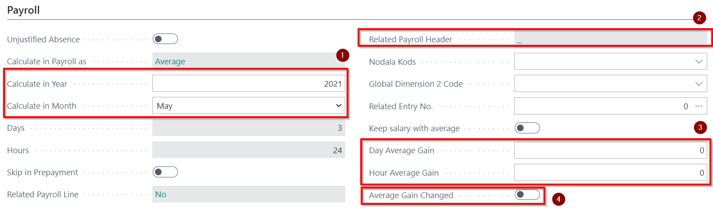

Absences
All deviations from the planned working hours must be entered on a separate absence card. All absence cards are listed in the Employee Absences register. You can record new absence by pressing the button New, and in the Tab General employee no. should be entered, as well as Cause of Absence Code and period from Date To date this absence will lasts. Cause of Absence codes are defined in Role Center - Absences - Cause of Absence.
There are 3 ways to enter absence:
- Complete the employee's absence card that will form a record in the absence register. Described in more detail in this chapter;
- Create a personnel order for absence, that will set up the order and record in the Absence Register. Described in more detail in the chapter Personnel orders;
- Import sick leaves absences from SRS EDS, which will form a record in the Absence Register. Described in more detail in the chapter Sick-list import from EDS.
Registering a new absence
In the tab General must be indicated employee who is in absence, must be selected cause of absence code and set the period when the absence was registered.
| Field Name | Description |
|---|---|
| Employee No. | Employee selected from the list to register absence. |
| Cause of Absence Code | Code selected from the list. |
| From Date | Date from which the absence is valid. |
| To Date | Date until which the absence is valid. |
| Description | Name of Cause of Absence code, system generated field. |
Tab Payroll
| Field Name | Description |
|---|---|
| Unjustified Absence | Enable if the absence is unjustified and there is no need to calculate the payment. |
| Calculate in Payroll as | Settings from the absence list, system generated field. |
| Calculate in Year | The system enters automatically based on the date of absence. Editable field. |
| Calculate in Month | The system enters automatically based on the date of absence. Editable field. |
| Days | The system enters automatically, based on the calendar assigned to the employee. |
| Hours | The system enters automatically, based on the calendar assigned to the employee. |
| Skip in Prepayment | If enabled, the calculated absence fee will not be paid in Prepayments. |
| Related Payroll Line | The system automatically indicates if a related document exists for the entry. |
| Related Payroll Header | The system indicates automatically when an absence calculation is made. |
| Global Dimension 1 Code | Indicate the 1st global dimension, if applicable. |
| Global Dimension 2 Code | Indicates the 2nd global dimension, if applicable. |
| Related Entry No. | Absence linking function. If the employee has entered a series of absences, which must be calculated with the same average earnings, then this absence should be indicated in this field. |
| Keep salary with average | Enables if the average salary should be kept during the absence. |
| Day Average Gain | If you need to change the daily average earnings, enter it manually in the field before calculating. |
| Hour Average Gain | If it is necessary to change the hourly average earnings, enter it manually in the field before the calculation. |
| Average Gain Changed | The system enables it automatically if values are entered in the daily or hourly average gain fields. |
Some fields in Tab Payroll fills in automatically. Should pay attention to the year, month  – there must be a month in which the salary calculation should include the information from this absence card. Originally entering absence month is determined by absence's start date. If a transient sick list is submitted after the salary is calculated (salary calculation paid or posted), then the calculation can be made in the end of the sick list month. For correction records calculation month are indicated by default the next month, for which salary list has not yet been created.
– there must be a month in which the salary calculation should include the information from this absence card. Originally entering absence month is determined by absence's start date. If a transient sick list is submitted after the salary is calculated (salary calculation paid or posted), then the calculation can be made in the end of the sick list month. For correction records calculation month are indicated by default the next month, for which salary list has not yet been created.

Fields Related Entry No.  and Day Average Gain
and Day Average Gain  will be filled, when absence calculation will be made. If you need to change the average gain manually, this before calculating manually need to be entered in the field Day (or Hour) Average Gain (a mark in field Average Gain Changed
will be filled, when absence calculation will be made. If you need to change the average gain manually, this before calculating manually need to be entered in the field Day (or Hour) Average Gain (a mark in field Average Gain Changed  ).
).
Using the sick list A absence code SLIMS_A and entering the dates from and to, if in the position card is a mark at Schedule/Accounting, then the Schedule of a given month and employee is then automatically opened, and it is possible to enter the employee's planned working hours during the sick leave.
All entries in this absence register must also be included in the Accounting table, but if the Accounting table has already been created: Accounting – open the required accounting card - Process - Copy from absence Register. In case it is not done, when generating a salary list, the system as the primary will perceive the information specified in the absence registry, not what is included in the Accounting table.
In the Tab Vacation is shown the period, to what vacation is attributed to.